import torch
import torch.nn as nn
import torch.optim as optim
import numpy as np
from sklearn.linear_model import LinearRegression
import pandas as pd
from plotnine import *
# Generate synthetic data
np.random.seed(42)
X = np.random.randn(100, 1) * 2 # 100 samples, 1 feature
y = 3 * X + 2 + np.random.randn(100, 1) * 0.5 # y = 3x + 2 + noise
# Convert to PyTorch tensors
X_tensor = torch.FloatTensor(X)
y_tensor = torch.FloatTensor(y)
# define a linear model
class LinearModel(nn.Module):
def __init__(self):
super().__init__()
self.linear = nn.Linear(1, 1) # 1 input feature, 1 output
def forward(self, x):
return self.linear(x)
# instantiate the model
model = LinearModel()
# define a loss function
loss_fn = nn.MSELoss()
# define an optimizer
optimizer = optim.SGD(model.parameters(), lr=0.01)
# Train: iterate over the data and update the model
num_epochs = 100
for epoch in range(num_epochs):
# Forward pass: compute model predictions and loss
y_pred = model(X_tensor)
loss = loss_fn(y_pred, y_tensor)
# Backward pass and parameter update
optimizer.zero_grad() # Clear previous gradients
loss.backward() # Compute gradients via backpropagation
optimizer.step() # Update model parameters
if (epoch + 1) % 10 == 0:
print(f'Epoch [{epoch+1}/{num_epochs}], Loss: {loss.item():.4f}')
# check performance
# compute PyTorch model predictions
model.eval()
with torch.no_grad():
y_pred_pytorch = model(X_tensor).numpy()
# compute scikit-learn predictions
lr = LinearRegression()
lr.fit(X, y)
y_pred_sklearn = lr.predict(X)
# compare coefficients
print("\nPyTorch model coefficients:")
print(f"Slope: {model.linear.weight.item():.4f}")
print(f"Intercept: {model.linear.bias.item():.4f}")
print("\nScikit-learn coefficients:")
print(f"Slope: {lr.coef_[0][0]:.4f}")
print(f"Intercept: {lr.intercept_[0]:.4f}")
# compare MSE
mse_pytorch = np.mean((y - y_pred_pytorch) ** 2)
mse_sklearn = np.mean((y - y_pred_sklearn) ** 2)
print(f"\nPyTorch MSE: {mse_pytorch:.4f}")
print(f"Scikit-learn MSE: {mse_sklearn:.4f}")
Fit linear mode to linear data
fit a linear model to linear data
We generate a data Y linearly dependent on features X: Y = X\beta + \epsilon
We fit a linear model
with gradient descent
with pytorch framework
with traditional linear regression estimate \hat\beta = (X^TX)^{-1}X^TY
plot predictions vs true
# Create a plot comparing predictions
# Create a DataFrame for plotting
plot_df = pd.DataFrame({
'y_true': y.flatten(),
'y_pred_pytorch': y_pred_pytorch.flatten(),
'y_pred_sklearn': y_pred_sklearn.flatten()
})
# Create the plot
p = (ggplot(plot_df)
+ geom_point(aes(x='y_true', y='y_pred_pytorch', color='"PyTorch"'), size=1)
+ geom_point(aes(x='y_true', y='y_pred_sklearn', color='"Scikit-learn"'), size=1)
+ geom_abline(intercept=0, slope=1, color='gray', linetype='dashed', alpha=0.5) # Identity line
+ scale_color_manual(values=['red', 'blue'])
+ labs(x='True Values', y='Predicted Values',
title='True vs Predicted Values',
color='Model')
+ theme_minimal()
)
p
(ggplot(plot_df)
+ geom_point(aes(x='y_pred_sklearn', y='y_pred_pytorch'), size=1)
+ geom_abline(intercept=0, slope=1, color='gray', linetype='dashed', alpha=0.5) # Identity line
+ labs(x='Y sklearn', y='Y pytorch',
title='ptorch vs sklearn predictions',
color='Model')
+ theme_minimal()
)
Fit linear model using the GPU
# Train on GPU (checking for both MPS and CUDA)
import torch
import torch.nn as nn
import torch.optim as optim
import numpy as np
from sklearn.linear_model import LinearRegression
import pandas as pd
from plotnine import *
# Check for available GPU devices
if torch.backends.mps.is_available():
device = torch.device('mps') # Apple Silicon
print("Using MPS (Apple Silicon GPU)")
elif torch.cuda.is_available():
device = torch.device('cuda') # NVIDIA GPU
print("Using CUDA (NVIDIA GPU)")
else:
device = torch.device('cpu') # Fallback to CPU
print("Using CPU (no GPU available)")
# Generate synthetic data (stays on CPU)
np.random.seed(42)
X = np.random.randn(100, 1) * 2
y = 3 * X + 2 + np.random.randn(100, 1) * 0.5
# Convert to PyTorch tensors and move to GPU
X_tensor = torch.FloatTensor(X).to(device)
y_tensor = torch.FloatTensor(y).to(device)
# Define and move model to GPU
class LinearModel(nn.Module):
def __init__(self):
super().__init__()
self.linear = nn.Linear(1, 1)
def forward(self, x):
return self.linear(x)
model = LinearModel().to(device)
loss_fn = nn.MSELoss()
optimizer = optim.SGD(model.parameters(), lr=0.01)
# Training loop (same as before, but data is on GPU)
num_epochs = 100
for epoch in range(num_epochs):
# Forward pass
y_pred = model(X_tensor)
loss = loss_fn(y_pred, y_tensor)
# Backward pass and optimize
optimizer.zero_grad()
loss.backward()
optimizer.step()
if (epoch + 1) % 10 == 0:
print(f'Epoch [{epoch+1}/{num_epochs}], Loss: {loss.item():.4f}')
# Get predictions back to CPU for comparison
model.eval()
with torch.no_grad():
y_pred_pytorch = model(X_tensor).cpu().numpy() # Move back to CPU before converting to numpy
# Compare with scikit-learn (on CPU)
lr = LinearRegression()
lr.fit(X, y)
y_pred_sklearn = lr.predict(X)
# Compare coefficients
print("\nPyTorch model coefficients:")
print(f"Slope: {model.linear.weight.item():.4f}")
print(f"Intercept: {model.linear.bias.item():.4f}")
print("\nScikit-learn coefficients:")
print(f"Slope: {lr.coef_[0][0]:.4f}")
print(f"Intercept: {lr.intercept_[0]:.4f}")
# Compare MSE
mse_pytorch = np.mean((y - y_pred_pytorch) ** 2)
mse_sklearn = np.mean((y - y_pred_sklearn) ** 2)
print(f"\nPyTorch MSE: {mse_pytorch:.4f}")
print(f"Scikit-learn MSE: {mse_sklearn:.4f}")
# Create a plot comparing predictions
plot_df = pd.DataFrame({
'y_true': y.flatten(),
'y_pred_pytorch': y_pred_pytorch.flatten(),
'y_pred_sklearn': y_pred_sklearn.flatten()
})
# Create the plot
p = (ggplot(plot_df)
+ geom_point(aes(x='y_true', y='y_pred_pytorch', color='"PyTorch"'), size=1)
+ geom_point(aes(x='y_true', y='y_pred_sklearn', color='"Scikit-learn"'), size=1)
+ geom_abline(intercept=0, slope=1, color='gray', linetype='dashed', alpha=0.5) # Identity line
+ scale_color_manual(values=['red', 'blue'])
+ labs(x='True Values', y='Predicted Values',
title=f'True vs Predicted Values (Training on {device})',
color='Model')
+ theme_minimal()
)
p